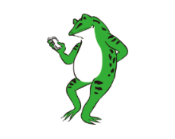

Check reservation status
We will update the status of this month's finalization, availability, and next month's application in real time.
We will update the status of this month's finalization, availability, and next month's application in real time.
Each group can make up to five reservations for the coming month. If there is an overlap of reservations, they will be confirmed by lottery on the first day of each month.

If you wish to use an available space in a month for which a lottery has already been held, your reservation will be confirmed on a first-come, first-served basis.

You may cancel your application until the day of the lottery. You can also cancel your application and then reapply, taking into account the congestion.

The ground will be divided into 6 categories (C to H) for each futsal court. The time slots are ①9:00~12:00 in the morning ②13:00~16:00 in the afternoon ③16:00~19:00 in the afternoon. Based on the above, the total number of slots available per day is 18 (6 slots x 3 time slots).
In order to use soccer, softball, or 200m track, you need to reserve the entire field. When you make a reservation, you must use all of the available slots per month to reserve 5 sections at once, and the entire field (6 sections) will be considered reserved and available for use.
Click here for details PDFHere is an explanation of Aobayama Gymnasium's rental categories.
Click here for details